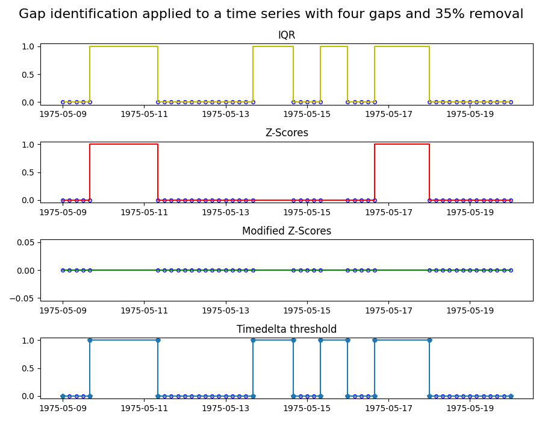
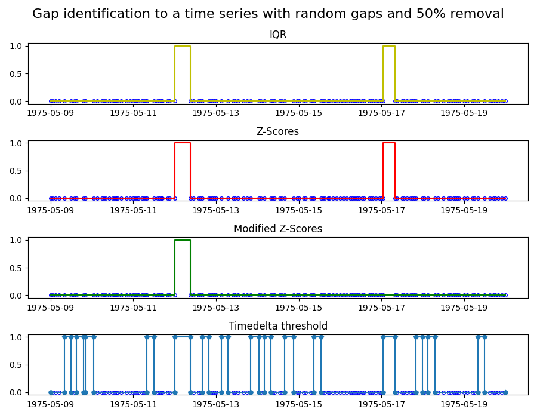

Note
Click here to download the full example code
Identifying gaps in time series
Identifying gaps in data is critical when working with time series. Data gaps can be for instance, the result of an unreliable or defective sensor, and that part of the data might need to be excluded. The exact definition of what is considered a gap requires domain knowledge and is therefore hard to automate. However, mathematical tools can help us to identify potential gaps that the domain expert can then evaluate.
In this example, we apply four common gap identification methods to two time series. The four methods are:
Z-scores: marks a gap if the time step size exceeds 3x the standard deviation of the time steps.
Modified Z-scores: a modified version of the Z-score method, which uses the median absolute deviation instead of the standard deviation.
Interquartile range (IQR): Uses IQR, a measure for the spread of the data, to identify gaps.
Timedelta threshold: marks a gap of the timedelta between points exceeds the threshold.
A good introduction to these methods can be found in [1]. Note that the values of the time series are irrelevant for these gap identification methods: they purely rely on the time steps sizes between data points.
In the first plot, we apply the four methods to a time series ranging from 1975/05/09 to 1975/05/20 with sampling frequency of 4 hours. In this time series, 35% of the data is removed by introducing four gaps at random locations. The plots show the different characteristics of the gap identification methods. In particular, the modified Z-Score method does not mark any gaps. The reason is that this methods relies on the median, and thus few and strong outliers, like in this case, are not weighted strongly. To test the modified Z-Score method, we create a second time-series with a sample frequency of 1 hour, and this time we randomly remove 50% of the data points.
References: [1] Iglewicz, Boris and David C. Hoaglin (1993), How to Detect and Handle Outliers. American Society for Quality Control, Vol 16.
- 
- 
import matplotlib.pyplot as plt
import pandas as pd
from indsl.data_quality.gaps_identification import (
gaps_identification_iqr,
gaps_identification_modified_z_scores,
gaps_identification_threshold,
gaps_identification_z_scores,
)
from indsl.signals.generator import insert_data_gaps, line
start = pd.Timestamp("1975/05/09")
end = pd.Timestamp("1975/05/20")
# Create a time series with four gaps of random location and size
remove = 0.35
data = line(start_date=start, end_date=end, slope=0, intercept=0, sample_freq=pd.Timedelta("4 h"))
ts_mult_gaps = insert_data_gaps(data=data, fraction=remove, method="Multiple", num_gaps=4)
# Create a time series with random gaps
remove = 0.5
data = line(start_date=start, end_date=end, slope=0, intercept=0, sample_freq=pd.Timedelta("1 h"))
ts_rand_gaps = insert_data_gaps(data=data, fraction=remove, method="Random")
# Apply gaps identification methods to first time series
ts_gaps_z_scores = gaps_identification_z_scores(ts_mult_gaps)
ts_gaps_mod_z_scores = gaps_identification_modified_z_scores(ts_mult_gaps)
ts_gaps_iqr = gaps_identification_iqr(ts_mult_gaps)
ts_gaps_threshold = gaps_identification_threshold(ts_mult_gaps, time_delta=pd.Timedelta("5h"))
fig, (ax1, ax2, ax3, ax4) = plt.subplots(4, 1, figsize=(9, 7))
ax1.plot(ts_mult_gaps, "bo", mec="b", markerfacecolor="None", markersize=4)
ax1.plot(ts_gaps_iqr, "y-")
ax2.plot(ts_mult_gaps, "bo", mec="b", markerfacecolor="None", markersize=4)
ax2.plot(ts_gaps_z_scores, "r-")
ax3.plot(ts_mult_gaps, "bo", mec="b", markerfacecolor="None", markersize=4)
ax3.plot(ts_gaps_mod_z_scores, "g-")
ax4.plot(ts_mult_gaps, "bo", mec="b", markerfacecolor="None", markersize=4)
ax4.plot(ts_gaps_threshold, "p-")
ax1.set_title("IQR")
ax2.set_title("Z-Scores")
ax3.set_title("Modified Z-Scores")
ax4.set_title("Timedelta threshold")
fig.suptitle("Gap identification applied to a time series with four gaps and 35% removal", fontsize=16)
fig.tight_layout()
# Apply gaps identification methods to second time series
ts_gaps_z_scores = gaps_identification_z_scores(ts_rand_gaps)
ts_gaps_mod_z_scores = gaps_identification_modified_z_scores(ts_rand_gaps)
ts_gaps_iqr = gaps_identification_iqr(ts_rand_gaps)
ts_gaps_threshold = gaps_identification_threshold(ts_rand_gaps, time_delta=pd.Timedelta("3h"))
fig, (ax1, ax2, ax3, ax4) = plt.subplots(4, 1, figsize=(9, 7))
ax1.plot(ts_rand_gaps, "bo", mec="b", markerfacecolor="None", markersize=4)
ax1.plot(ts_gaps_iqr, "y-")
ax2.plot(ts_rand_gaps, "bo", mec="b", markerfacecolor="None", markersize=4)
ax2.plot(ts_gaps_z_scores, "r-")
ax3.plot(ts_rand_gaps, "bo", mec="b", markerfacecolor="None", markersize=4)
ax3.plot(ts_gaps_mod_z_scores, "g-")
ax4.plot(ts_rand_gaps, "bo", mec="b", markerfacecolor="None", markersize=4)
ax4.plot(ts_gaps_threshold, "p-")
ax1.set_title("IQR")
ax2.set_title("Z-Scores")
ax3.set_title("Modified Z-Scores")
ax4.set_title("Timedelta threshold")
fig.suptitle("Gap identification to a time series with random gaps and 50% removal", fontsize=16)
fig.tight_layout()
plt.show()
Total running time of the script: ( 0 minutes 0.539 seconds)